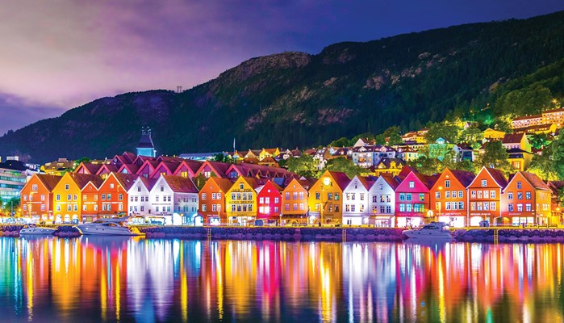
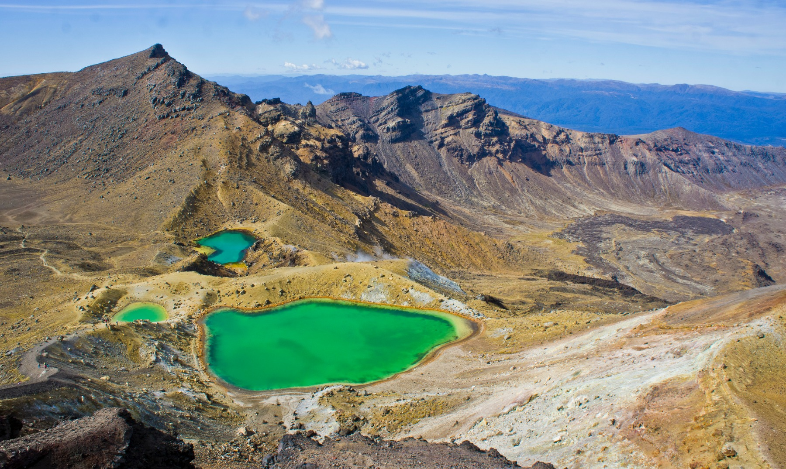
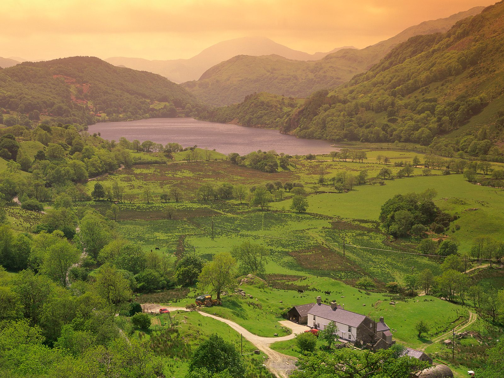

Escocia, Highlands
Escocia, Highlands Grecia, Mykonos
Grecia, MykonosNoruega
Italia, Puglia
Francia, Paris
Tennesse, Nashville
Turquía, Cappadócia
Nueva Zelanda, Parque Nacional Tongariro
Dinamarca
Escocia, HighlandsGrecia, Mykonos